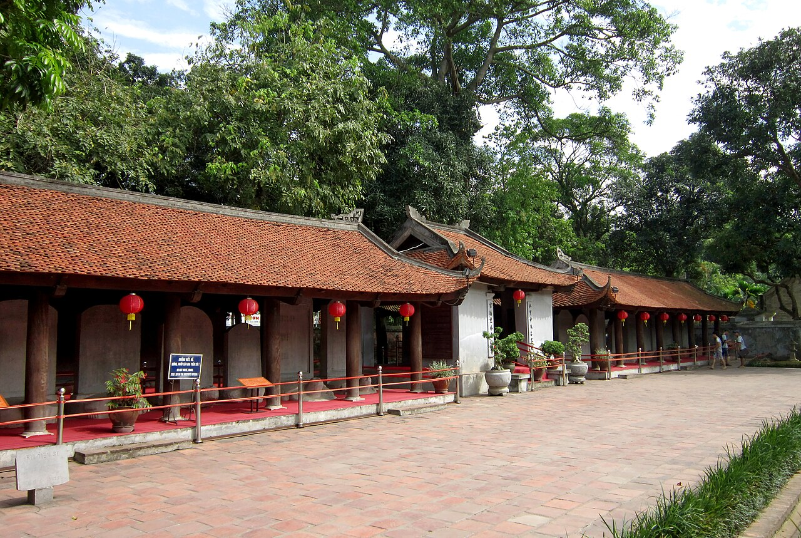

Khoa thi Nhâm Tuất là khoa thi sớm nhất được ghi trên bộ bia còn lưu tại Văn Miếu.
VĂN MIẾU – QUỐC TỬ GIÁM
Hành trình
khoa bảng
Khám phá khu bia tiến sĩ và những câu chuyện được lưu lại trên đá qua nhiều thế kỷ.
82BIA TIẾN SĨ
THAM QUAN QUA ẢNH
Nhà bia tiến sĩ

THAM QUAN 360°
PHÒNG HIỆN VẬT
TƯ LIỆU DI SẢN
Dấu mốc khoa bảng
Những tấm bia đầu tiên được dựng dưới thời vua Lê Thánh Tông để ghi danh người đỗ đạt.
Năm tổ chức khoa thi muộn nhất được ghi trong bộ bia.
UNESCO ghi danh bộ bia vào Danh mục Ký ức Thế giới.
Trán và thân bia
Hoa văn và kiểu chữ biến đổi theo thời kỳ. Văn bia lưu thông tin về khoa thi, người đỗ và những người tham gia soạn, khắc bia.
Rùa đá đội bia
Đế bia tạc hình rùa, một biểu tượng trường thọ. Hình thức đế rùa và hoa văn giúp nhận diện đặc trưng tạo tác qua các thời kỳ.
Giá trị giáo dục
Bộ bia là tư liệu nghiên cứu cách đào tạo và tuyển chọn nhân tài dưới triều Lê và Mạc, đồng thời ghi nhận truyền thống coi trọng việc học.
ÔN TẬP